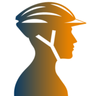

Windows
x86-64 · Windows 10 and 11
Download installer ↗
incyclist.Choose your platform
Incyclist is free and open source. Select your operating system and architecture below. We do not guess your device or hide any build.
Desktop
x86-64 · Windows 10 and 11
Download installer ↗AppImage for Intel and AMD 64-bit systems
Download AppImage ↗AppImage for ARM-based Linux systems
Download AppImage ↗macOS 11 or newer · Intel Macs
Download DMG ↗macOS 11 or newer · M-series Macs
Download DMG ↗Linux AppImages need to be made executable before running. See the Linux FAQ for help.
Phone and tablet
Android 7.0 or newer · phones and tablets
Get it on Google Play ↗iOS / iPadOS 15.5 or newer
Download on the App Store ↗Next step
Launch the app and pair your trainer or sensors. Need help with a setup? Browse the FAQ or open the user manual.